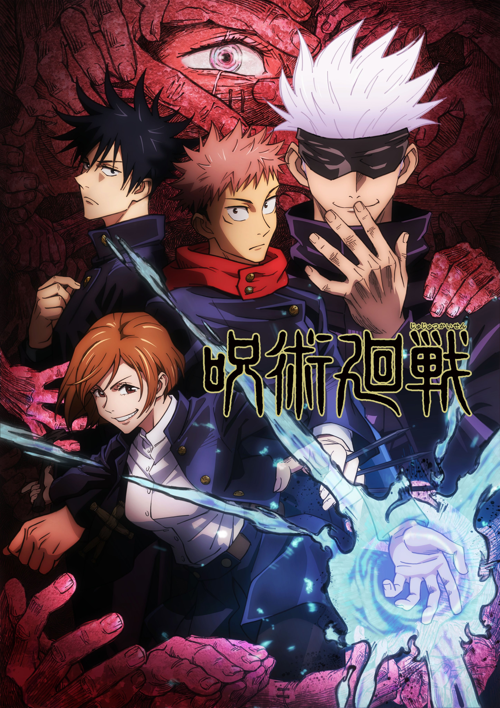

咒術迴戰
簡介：故事描述體育萬能的高中生虎杖悠仁為了解救被「咒物」纏上的學長姊，而吞下了詛咒的手指，讓「宿儺」詛咒與自己合而為一。虎杖得知只有自己能對付宿儺之後，他加入了咒術師養成學校「東京咒術高專」，學習祓除咒靈，實現爺爺要他助人的遺言。
設定:人類的負面情緒累積混雜後會形成咒靈並對人類造成危害，日本每年不明死亡或失蹤年均超過1萬人大部分因此造成，只有使用被稱為咒力的能量才得以祓除，而負責祓除的人稱為咒術師。由於咒術師是利用負面能量（具體分為咒力和術式）與咒靈現場戰鬥的人，常常親眼經歷無辜殺害或悲慘死狀，他們面對死亡時不可能不帶有悔恨恐懼或憤怒，所以常見他們每一個戰鬥時總會呈現一副猙獰或者感到興奮的模樣，因此帶出個人戰鬥風格和各自性格陰暗短處，而平常生活訓練中咒術師也必須自主學會控制汲取負面情緒如殺意作為咒力。日本有兩間咒術教育機構，分別位於東京和京都的咒術高等專門學校。咒物是帶有強大咒力的物品，通常因難以破壞而被咒術高專保管，若經過妥善封印，可以當作地方設施辟邪。一旦出現事故，就派遣咒術高專相關人員進行處理。
原作：芥見下々
製作公司：MAPPA
監督：朴 性厚
聲優
虎杖悠仁：榎木淳弥
伏黒 恵：内田雄馬
釘崎野薔薇：瀬戸麻沙美
五条 悟：中村悠一
パンダ：関 智一